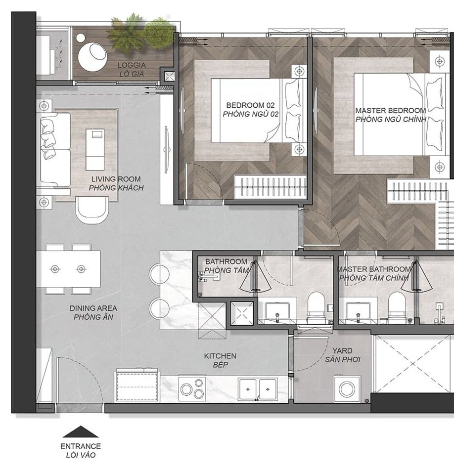
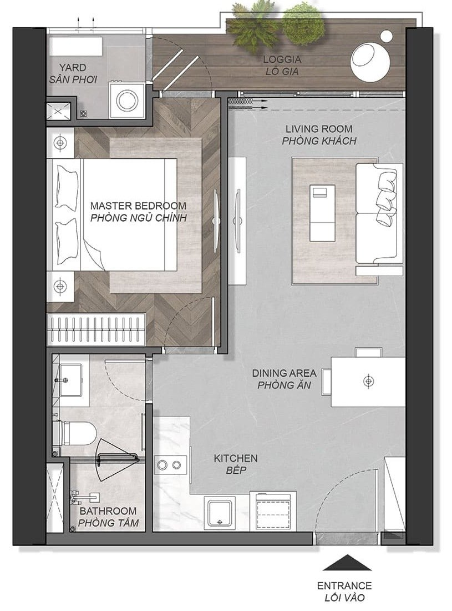
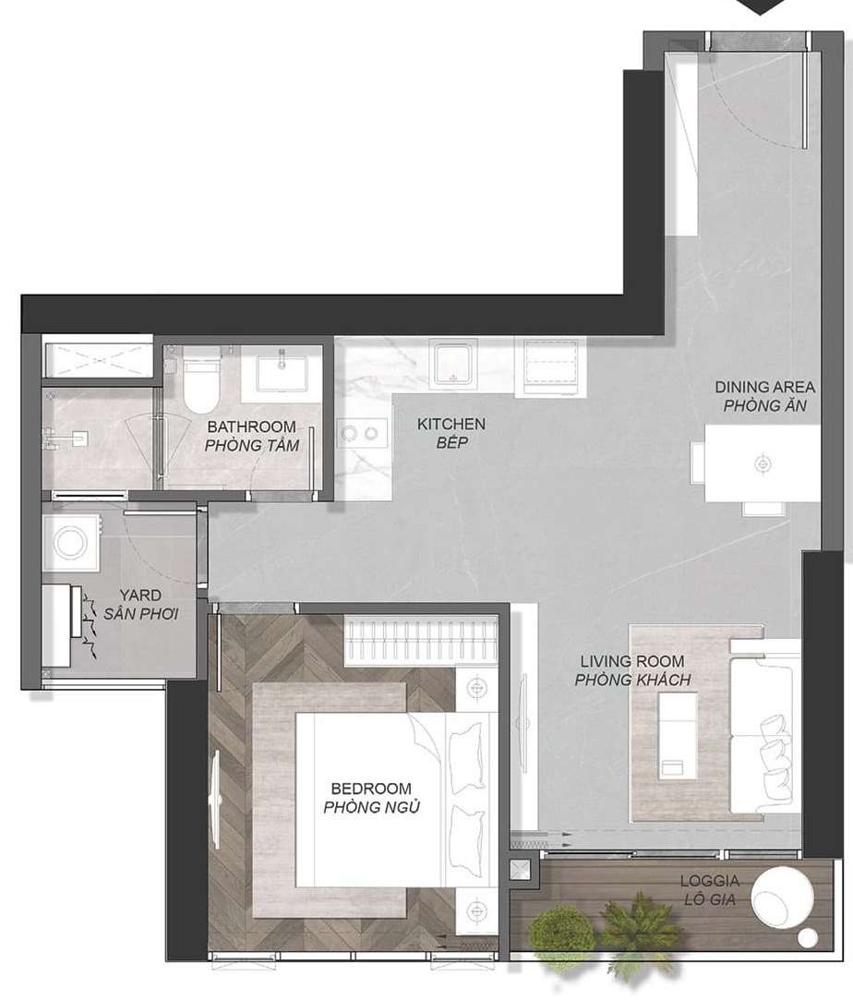
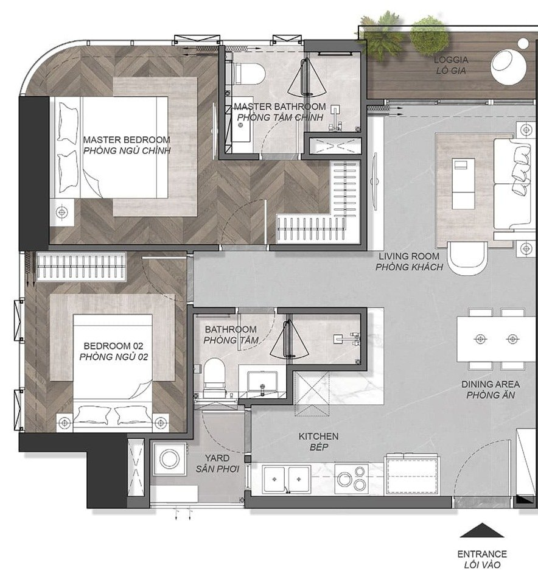
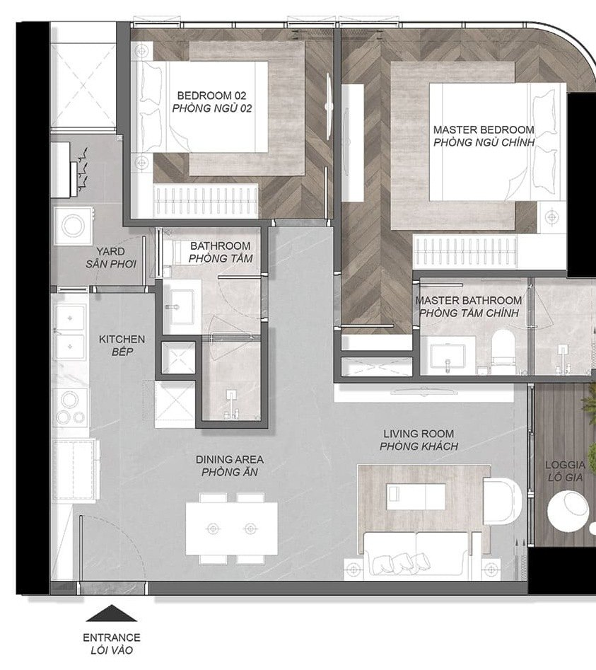

Eaton Park (Mai Chí Thọ, Thủ Đức): thông tin dự án và mặt bằng căn hộ

1. Tóm tắt nhanh
Mai Chí Thọ
đã thu thập
khác nhau rõ rệt
Eaton Park là dự án căn hộ cao cấp của Gamuda Land (Malaysia) trên đại lộ Mai Chí Thọ, khu An Phú – Bình Trưng (Quận 2 cũ), TP. Thủ Đức. Dự án khoảng 3,77 ha với khoảng 2.000 sản phẩm, khởi công khoảng tháng 3/2024 với Coteccons là tổng thầu. Bài tổng hợp các mặt bằng căn hộ công bố. Phân tích giá chi tiết xem bài riêng.
| Hạng mục | Thông tin |
|---|---|
| Tên dự án | Eaton Park (Gamuda Land) |
| Chủ đầu tư | Gamuda Land (Malaysia) |
| Quy mô | Khoảng 3,77 ha, khoảng 2.000 sản phẩm, nhiều tháp |
| Khởi công | Khoảng tháng 3/2024; Coteccons là tổng thầu |
| Bàn giao | Dự kiến năm 2027 |
| Giá tham khảo | Từ khoảng 115–125 triệu/m² thông thủy (chưa VAT) |
| Giá bán chính thức | Chưa có bảng giá chính thức trong bài; xem mục 5 |
2. Vị trí
Dự án nằm tại Mai Chí Thọ, An Phú, Thủ Đức. Bài chỉ nêu thông tin công bố, không đánh giá vị trí.
3. Sản phẩm
Bảng dưới đây liệt kê toàn bộ mặt bằng đã thu thập; những mẫu có diện tích gần như trùng nhau được ghi chú “cùng mặt bằng”, và phần hình chỉ đặt các mặt bằng khác nhau. Diện tích có thể khác nhau tùy nguồn (tim tường hay thông thủy); cột trống nghĩa là tài liệu không công bố.
| Loại / mã | Số PN | Tim tường (m²) | Thông thủy (m²) | Ghi chú |
|---|---|---|---|---|
| None | 3 | – | 96,2 | |
| None | 1 | 50,7 | 46,1 | |
| None | 1 | 55,5 | 49,4 | |
| None | 2 | 74,9 | 69,3 | |
| None | 2 | 74,8 | 68,2 | |
| None | 2 | 72,0 | 65,3 | |
| None | 2 | 79,3 | 72,9 | |
| None | 2 | 75,9 | 70,7 | |
| None | 3 | 104,8 | 95,8 | |
| A1.1b | 1 | 51,9 | 47,2 | |
| A3.1b | 1 | 55,8 | 49,7 | |
| B1.2c | 2 | 75,9 | 70,7 | |
| B2.1c | 2 | 75,2 | 69,4 | |
| B4c | 2 | 71,7 | 65,8 |
Căn hộ 1 phòng ngủ


Căn hộ 2 phòng ngủ


4. Tiện ích và thiết kế
Thông tin tiện ích chi tiết xem trang chính thức của dự án; bài này tập trung vào mặt bằng căn hộ.
5. Giá tham khảo (gần đúng)
| Nguồn / loại căn | Mức giá | Ghi chú |
|---|---|---|
| Giá sơ cấp dự kiến | 115–125 triệu/m² | Thông thủy, chưa VAT; một bảng 11/2025 ghi từ 120 |
| Giá rao thứ cấp | 127–160 triệu/m² | 3PN 103,7 m² có tin 159,7 triệu/m² |
Giá sơ cấp khoảng 115–125 triệu/m², giá rao thứ cấp 127–160 triệu/m². Xem thêm bài phân tích giá riêng của Eaton Park.
6. Tiến độ và nguồn cung
- Chưa có thông tin chính thức trong bài: số căn từng mẫu, bảng giá hiện hành và tiến độ chi tiết; hãy hỏi chủ đầu tư.
7. Kết luận
Bài tổng hợp các mặt bằng đã công bố của Eaton Park (Gamuda Land) để dễ đối chiếu. Khi cân nhắc một căn cụ thể, hãy xác nhận mã căn, diện tích tim tường và thông thủy và giá hiện hành với chủ đầu tư.